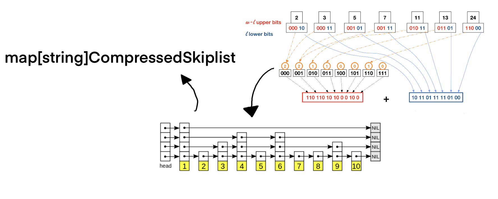

Bloom Filters: Building a Cutting Edge Go Search Engine to Explore the World's Source Code
Who are you?
"Officially" technical lead/principle at Kablamo but a "code monkey" at heart.
I blog boyter.org I free software github/boyter/ I run searchcode.com also on the twitter.com @boyter activitypub @boyter@honk.boyter.org
https://boyter.org/
Everything is here, so feel free to go back to sleep

PHP -> Python -> Java -> Go

The index
My personal shame
early termination, syntax highlighting, matching, snippet extraction, rate limiting, index, bot detection, ranking, distributed algorithms, caching, tokenization, string searching, regular expressions, data structures, line detection, CPU cache lines, duplicate detection, literal extraction, unicode, case insensitive matching etc...
Considerations
- Free service
- Put everything in RAM
- Downtime not a huge issue
- Single server
- Single binary, no daemons!
- Boolean queries
- Single developer, time constrained
Searching: Tokenisation
Mapping / Stemming
"searchcode" -> [searchcode]
"sydney gophercon" -> [sydney, gophercon]
"likes liked likely" -> [like]
Does not work for code!
for(i=0;i++;i<100)
Searching code: Tokenisation
Trigrams
This works for east asian languages too"searchcode" -> [sea, ear, arc, rch, chc, hco, cod, ode]
"pppppppppppp" -> [ppp]
Problems
Creates long posting lists
Introduces false positives
"searchcode" -> [searchcode]
vs
"searchcode" -> [sea, ear, arc, rch, chc, hco, cod, ode]
Trigram Generation
func Trigrams(text string) []string {
var runes = []rune(text)
if len(runes) <= 2 {
return []string{}
}
ngrams := make([]string, len(runes)-2)
for i := 0; i < len(runes); i++ {
if i+3 < len(runes)+1 {
ngram := runes[i : i+3]
ngrams[i] = string(ngram)
}
}
return ngrams
}
func Trigrams(text string) []string {
var runes = []rune(text)
if len(runes) <= 2 {
return []string{}
}
ngrams := make([]string, len(runes)-2)
for i := 0; i < len(runes); i++ {
if i+3 < len(runes)+1 {
ngram := runes[i : i+3]
ngrams[i] = string(ngram)
}
}
return ngrams
}

What is an index?
Structured list. Keys point at data so searches are faster.
Given a term, return id's which contain it.
Textbook 101 index
2 examples, positional and non-positional
package main
func main() {
// non-positional index
index := map[string][]int{}
index["gopher"] = append(index["gopher"], 1337)
// positional index
type pos struct {
id int // unique document id
loc []int // store document positions in posting list
}
posIndex := map[string][]pos{}
posIndex["gopher"] = append(posIndex["gopher"], pos{1337, []int{1, 2, 3, 99}})
}
Problem: Intersect two lists
Trigrams create LONG posting lists, need to skip list

For those wondering...
Problem 2
Compression
index := map[string][]int{} // this should be compressible right?
Shannon Elias Fano
Complexity
index := map[string][]int{} // non-positional index
vs
My attempt
Two turkeys taped together does not make an eagle.

How about bloom filters?
A.K.A Bitsliced signatures
Bloom filter: Empty
16 boolean's in an array
Bloom filter: Add
Hash the term 3 times and set the bits

Bloom filter: Add second
3 more bits set

Bloom filter: Add overlapping bits
"big" and "dog" share 2 bits
Bloom filter: Hit
hash "big" and check bits

Bloom filter: Miss
one bit position is 0 so miss
Bloom filter: False Positive
"big" and "yellow" supplied bits

Go Bloom Filter
package main
import (
"fmt"
"hash/fnv"
)
func main() {
bloom := make([]bool, 16) // 16 bit bloom filter
hash := func(term string) uint64 { // single hash function for bloom filter
hsh := fnv.New64()
_, _ = hsh.Write([]byte(term))
return hsh.Sum64() % uint64(len(bloom))
}
bloom[hash("gopher")] = true // add to the filter
bloom[hash("sydney")] = true
for _, i := range bloom { // print out the filter
if i == true {
fmt.Print("1")
} else {
fmt.Print("0")
}
}
if bloom[hash("sydney")] == true { fmt.Print("\nprobably added") }
if bloom[hash("house")] == false { fmt.Print("\nwas not added") }
if bloom[hash("boyter")] == true { fmt.Print("\nfalse positive! was never added!") }
}
$ go run main.go
0010000001000000
probably added
was not added
false positive! was never added!
Bloom filter: search
Check bit positions 1 and 7. Document 4 matches.
for each bloomfilter
for each bit
check if bit location in filter is set
if all matching bits are set
record possible match

Advantages
- Compressed. Only using several bits per term!
- Very simple!!!!
- Adding
- Editing
- Searching
- Extensible
Problems
No free lunch...
package main
import (
"fmt"
"runtime"
)
func main() {
memUsage := func() string {
var m runtime.MemStats
runtime.ReadMemStats(&m)
return fmt.Sprintf("%v MB", m.Alloc/1024/1024)
}
fmt.Println(memUsage())
bigBloom := make([]bool, 100_000_000) // represents lots of bloom filters in memory
fmt.Println(memUsage())
_ = len(bigBloom)
}
$ go run main.go
0 MB
95 MB
Problem 2
Generic RAM stick

Illustration
Can we do better?
Bitfunnel
Good enough for Dan Luu? Good enough for you.

Fixes
Rotate the filter. Documents now on columns not rows.

Fetch row 1 and 7 same as previous example

Logically & all rows

Pos 1 is true, so document 4 matches

Results?
This reduces the amount of RAM we need to access by a huge factor for larger bloom filters.
Pack the bits with bit set
Use int64's to hold the filters in columns, and flip bits starting right to left.
var bloomFilter []uint64
var bloomSize = 16
var currentBlockDocumentCount = 0
var currentBlockStartDocumentCount = 0
func Add(item []bool) error {
if currentBlockDocumentCount == 0 || currentBlockDocumentCount == 64 {
bloomFilter = append(bloomFilter, make([]uint64, bloomSize)...)
currentBlockDocumentCount = 0
currentBlockStartDocumentCount += bloomSize
}
for i, bit := range item {
if bit {
bloomFilter[currentBlockStartDocumentCount+i] |= 1 << currentBlockDocumentCount
}
}
currentBlockDocumentCount++
currentDocumentCount++
return nil
}
Result
16 bit bloom filter, with 32 documents added. Less wasted space.
0000000000000000000000000000000010100011111111111111111111111101
0000000000000000000000000000000001110000000000010000100000000000
0000000000000000000000000000000000000000000000000000000000000000
0000000000000000000000000000000000100011111100000000000000000000
0000000000000000000000000000000000100000000000000000000000000000
0000000000000000000000000000000011000000000000000000000000000000
0000000000000000000000000000000000000000000000000000000000000000
0000000000000000000000000000000000001000000000000001000000000000
0000000000000000000000000000000000111100000000000000000000000000
0000000000000000000000000000000000100001111100000001010101011110
0000000000000000000000000000000010000010000010001010101010100011
0000000000000000000000000000000001011000000000000000000000000000
0000000000000000000000000000000001101011111111111111111111111111
0000000000000000000000000000000000110000001000000001100000001000
0000000000000000000000000000000010100010000111111110101010100001
0000000000000000000000000000000001100011111100000000000000000000
Sharding
Shard based on the length of the document we want to index.
0000000100000000 // underfilled bloom filter
1011111111111110 // overfilled bloom filter
Result? Less wasted space. Squeeze every bit.
┌──────────────────┐ ┌──────────────────┐ ┌──────────────────┐
│ index ├─┬▶│ shard 512 bits ├┬─▶│ block-1 64 docs │
└──────────────────┘ │ └──────────────────┘│ └──────────────────┘
│ │
│ │ ┌──────────────────┐
│ ├─▶│ block-2 64 docs │
│ │ └──────────────────┘
│ │
│ │ ┌──────────────────┐
│ └─▶│ block-3 64 docs │
│ └──────────────────┘
│
│
│ ┌──────────────────┐ ┌──────────────────┐
└▶│ shard 1024 bits ├┬─▶│ block-1 64 docs │
└──────────────────┘│ └──────────────────┘
│
│ ┌──────────────────┐
└─▶│ block-2 64 docs │
└──────────────────┘
Copy the shards after indexing
Result? Less fragmented memory, faster search.
// attempt to save/organise memory shrink lists... https://go.dev/blog/slices-intro#TOC_6
out := make([]int64, len(bloomFilter))
copy(out, bloomFilter)
bloomFilter = out
Frequency Concious Bloom Filter
Rare terms need more hashes to reduce false positive rate
func (ci *CaissonIndex) DetermineHashCount(ngram string) int {
// version 0.1
// if nothing that indicates its a very rare term so it needs the most hashes
// so set that up as the default
hashCount := 5
v, ok := ci.termTreatments[ngram]
if ok {
weight := float64(v) / float64(ci.highestTermCount) * 100
if weight >= 10 {
hashCount = 1
} else if weight >= 5 {
hashCount = 2.5
} else if weight >= 2 {
hashCount = 3
} else if weight >= 1.5 {
hashCount = 4
}
}
return hashCount
}
Result?
Wasted time... For trigrams anyway
New algorithm is mind blowing.
func DetermineHashCount(ngram string) int {
return 2
}
Restrict Parallelism
Parallelism works... if you have CPU to spare
var sem = make(chan bool, 5) // counting semaphore
func doSearch() { // only 5 instances of this function can run
sem <- true
defer func() {
<- sem
}()
// Do CPU/Memory intensive stuff here
}
Searching
The core loop.
func Search(queryBits []uint64) []int {
var results []int
var res uint64
for i := 0; i < len(bloomFilter); i += 2048 {
res = bloomFilter[queryBits[0]+uint64(i)]
for j := 1; j < len(queryBits); j++ {
res = res & bloomFilter[queryBits[j]+uint64(i)]
if res == 0 { // important! skip shard if nothing!
break
}
}
if res != 0 {
for j := 0; j < 64; j++ {
if res&(1<<j) > 0 {
results = append(results, 64*(i/2048)+j)
}
}
}
}
return results
}
Searching: Visually
Perform & between each row, and if we see 0 skip to next block
Final Result
Rolling average index search time: ~50ms
140,000,000 to 180,000,000 files - roughly 75 billion lines
Index rougly ~100GB RAM

Conclusions
Go. I doubt I could have done it in another language.
Bloomfilters + Trigrams works well. As far as I know this is globally unique. Nobody else I know uses this approach.
A minimal version is available for you to play with https://github.com/boyter/indexer
Users probably don't care how searchcode's index works, but I know. Now you do too.